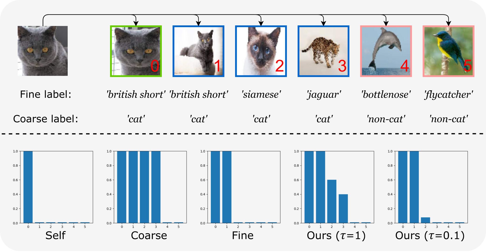
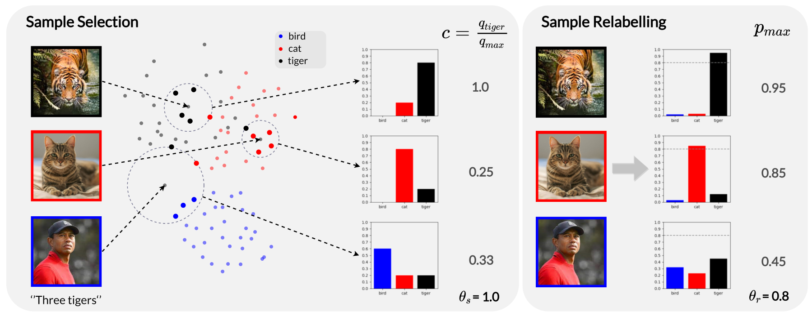

|
Chen FENG （冯晨） I'm a PhD student at Queen Mary University of London in UK, working with Prof. Ioannis Patras. I also visited University of Trento as an AI4Media Junior Exchange Fellow, working with Prof. Nicu Sebe. Before that, I received my bachelor's degree from Nankai University and my master's degree from Tsinghua University. |
{kind=link}
News |
|
|
2024.1 |
I was invited for an open seminar talk in RIKEN AIP. |
ResearchI'm interested in various weakly supervised learning problems in the context of computer vision, including completely unlabelled self-supervised learning, semi-supervised learning with partial data having labels, and learning with noisy/coarse labels. I'm happy to discuss any related topics and possible collaborations, please simply drop me an email! |

|
Self-Supervised Representation Learning with Cross-Context Learning between Global and Hypercolumn Features
Zheng Gao, Chen Feng, Ioannis Patras WACV, 2024 code / paper |
|

|
MaskCon: Masked Contrastive Learning for Coarse-Labeled Dataset
Chen Feng, Ioannis Patras CVPR, 2023 code / paper / video |
|

|
SSR: An Efficient and Robust Framework for Learning with Unknown Label Noise
Chen Feng, Georgios Tzimiropoulos, Ioannis Patras BMVC, 2022 code / paper |

|
Adaptive Soft Contrastive Learning
Chen Feng, Ioannis Patras ICPR, 2022 code / paper |
Academic serviceConferences: ICML2022(Outstanding Reviewer), CVPR2023-2024, NeurIPS 2022-2023, AAAI2023-2024, ICLR2023-2024, ICCV2023, BMVC2022 Journals: Image and Vision Computing, TPAMI |